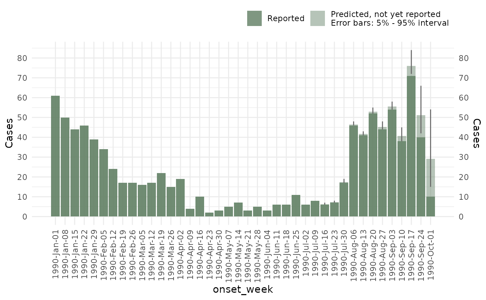
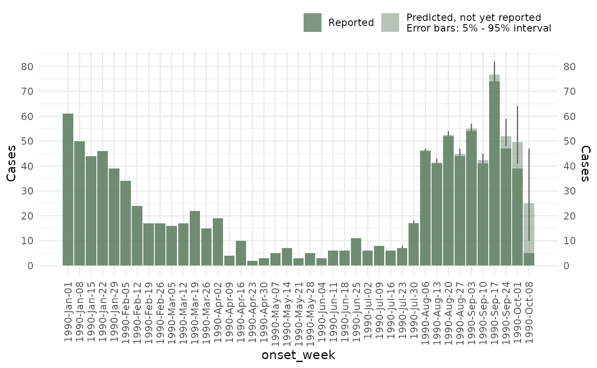

Introduction to diseasenowcasting
Introduction.RmdThe diseasenowcasting package provides a
disease-agnostic framework for nowcasting the number of cases affected
by certain disease.
What is nowcasting?
In many applications, it is of interest to predict the current number of cases as there might be a lag in the registry. Examples of lags can be administrative such as tests taking time to yield results, sociological such as patients taking time to report at their healthcare facility after symptom onset or biological: symptoms not happening at the same time as colonization. In such cases you might end up with registries looking like the one in Figure 1: where the number of cases observed by today is an incomplete fraction of the overall number of cases that will eventually be registered.

Current number of cases for a certain disease (left) vs the eventual number of registered cases for that disease (right)
The difference between the current observed number of cases and the final number of cases that will eventually be reported is accounted for by a model. By nowcasting, we refer to predicting the number of cases for a specific disease in a date that has already happened (or is currently happening) and for which we have incomplete information. The most basic example involves predicting the number of cases for now given that we have already seen some of today’s cases arrive at our system but not all of them yet. Hence the nowcast refers to the number of cases that we will eventually observe for a certain time frame as depicted in Figure 2:
Nowcasted number of cases for the disease of the previous image given that we had only observed a fraction of them
This vignette will give you an overview of the basics of the
diseasenowcasting package. The typical workflow involves
the following steps:
- Getting the data.
- Fitting a model.
- Evaluating the model.
- Updating with new data.
In this tutorial we will focus only on the steps in a reproducible manner and we will refer to specific vignettes for advanced usage on each of the steps.
set.seed(26758)
library(diseasenowcasting)
library(dplyr)1. Getting the data
Data for the nowcasting function should be either
individual-level data or line-list data. In any case at least two
columns in Date format are required: the
true_date and the report_date.
-
true_dateRefers to the date when the case happened. -
report_dateRefers to the date when the case was reported.
In general we assume that the
true_datealways happened before thereport_dateas you cannot report something that hasn’t already happened.
Types of data
Individual-level data
By individual-level data we mean a dataset for which each row
represents a case. For example, the denguedat dataset
included in the package contains individual-level data:
#Call the dataset
data("denguedat")
#Preview
denguedat |> head()
#> onset_week report_week gender
#> 1 1990-01-01 1990-01-01 Male
#> 2 1990-01-01 1990-01-01 Female
#> 3 1990-01-01 1990-01-01 Female
#> 4 1990-01-01 1990-01-08 Female
#> 5 1990-01-01 1990-01-08 Male
#> 6 1990-01-01 1990-01-15 FemaleNotice that beyond the two dates (here
true_date = "onset_week" and
report_date = "report_week") there can be additional
covariates in the data (such as gender in this
example).
Line-list data
By line-list data we mean a dataset for which each row represents a
count of cases For example, the mpoxdat dataset included in
the package contains line-list data:
#Call the dataset
data("mpoxdat")
#Preview
mpoxdat |> head()
#> # A tibble: 6 × 4
#> # Rowwise:
#> dx_date dx_report_date race n
#> <date> <date> <chr> <int>
#> 1 2022-07-08 2022-07-12 Asian 4
#> 2 2022-07-08 2022-07-12 Black 6
#> 3 2022-07-08 2022-07-12 Hispanic 6
#> 4 2022-07-08 2022-07-12 Non-Hispanic White 6
#> 5 2022-07-08 2022-07-13 Asian 2
#> 6 2022-07-08 2022-07-13 Black 3Both line-list and individual-level data can be used in the package.
Also, the package allows for different time granularity. The
denguedat contains counts per week while
mpoxdat has counts per day. Both weekly and daily time
frames are usable in diseasenowcasting.
2. Fitting the nowcast
You can use the [nowcast()] function to generate nowcasts for your
data. In the following example we use only a fraction of
denguedat: until October 1990 to speed things up (you can
use the whole denguedat if you want):
#Reduce the dataset
denguedat_fraction <- denguedat |>
filter(report_week <= as.Date("1990/10/01", format = "%Y/%m/%d"))For the nowcast we specify which one is the true_date
and which one corresponds to the report_date. Remember that
the true_date should always be smaller or equal to the
report_date as the assumption is that no cases can be
reported before happening:
#Generate the nowcast. Set verbose option t
ncast <- nowcast(denguedat_fraction, true_date = "onset_week", report_date = "report_week")The ncast object itself shows the characteristics of the
fitted model:
ncast
#>
#> ── Nowcast for 1990-10-01 ──
#>
#> • Column with `true_date` = "onset_week"
#> • Column with `report_date` = "report_week"
#> • units = "weeks"
#>
#> ── Epidemic effects:
#> The following effects are in place:
#> • week_of_year
#>
#> ── Delay effects:
#> No temporal effects are considered
#>
#> Use the `summary` function to obtain the summary of predictions or `plot` to
#> generate an image
#> You can generate plots of the nowcast with the
plot function:
plot(ncast)
And get the predictions with the summary function
summary(ncast)
#> # A tibble: 40 × 7
#> onset_week mean sd median `5%` `95%` Strata_unified
#> <date> <dbl> <dbl> <dbl> <dbl> <dbl> <chr>
#> 1 1990-01-01 61 0 61 61 61 No strata
#> 2 1990-01-08 50 0 50 50 50 No strata
#> 3 1990-01-15 44 0 44 44 44 No strata
#> 4 1990-01-22 46 0 46 46 46 No strata
#> 5 1990-01-29 39 0 39 39 39 No strata
#> 6 1990-02-05 34 0 34 34 34 No strata
#> 7 1990-02-12 24 0 24 24 24 No strata
#> 8 1990-02-19 17 0 17 17 17 No strata
#> 9 1990-02-26 17 0 17 17 17 No strata
#> 10 1990-03-05 16 0 16 16 16 No strata
#> # ℹ 30 more rowsYou can see how to add holiday effects, change the priors, and add further options to the model, in the Customizing your nowcast article. For now we will show you how to evaluate a nowcast once it has been prepared:
3. Evaluating the model
Once a nowcast has been constructed you can use the [backtest()] function to evaluate what the current model would have predicted in the past vs what was actually observed. Here, for example, we are evaluating what the model predicted for May, June and July:
#This will take a while as it refits the model several times
btest <- backtest(ncast, start_date = as.Date("1990/05/01"), end_date = as.Date("1990/07/31"), refresh = 0)The [backtest_metrics()] function calculates the mean absolute error
(mae), root mean squared error (rmse) and
weighted interval scoring (wis):
#This will take a while as it refits the model several times
backtest_metrics(btest)
#> # A tibble: 13 × 14
#> horizon Strata_unified model now mse se_point wis overprediction
#> <dbl> <chr> <chr> <date> <dbl> <dbl> <dbl> <dbl>
#> 1 0 No strata model_… 1990-05-07 15.2 231. 6.66 5
#> 2 0 No strata model_… 1990-05-14 13.8 191. 5.30 3.43
#> 3 0 No strata model_… 1990-05-21 16.0 255. 7.10 5.43
#> 4 0 No strata model_… 1990-05-28 14.6 212. 5.84 4.14
#> 5 0 No strata model_… 1990-06-04 15.8 251. 6.87 5.14
#> 6 0 No strata model_… 1990-06-11 10.6 112. 3.72 2.14
#> 7 0 No strata model_… 1990-06-18 13.9 195. 5.63 4
#> 8 0 No strata model_… 1990-06-25 6.21 38.5 2.04 0.571
#> 9 0 No strata model_… 1990-07-02 10.0 101. 3.63 2.29
#> 10 0 No strata model_… 1990-07-09 6.70 44.8 2.14 0.714
#> 11 0 No strata model_… 1990-07-16 9.60 92.1 3.47 2
#> 12 0 No strata model_… 1990-07-23 7.48 55.9 2.44 1
#> 13 0 No strata model_… 1990-07-30 1.40 1.97 1.86 0
#> # ℹ 6 more variables: underprediction <dbl>, dispersion <dbl>, bias <dbl>,
#> # interval_coverage_50 <dbl>, interval_coverage_90 <dbl>, ae_median <dbl>4. Updating with new data
The [update()] function takes an existing nowcast and updates it with
new_data to generate predictions for a more recent now. For
example, consider now the denguedat information with one
additional new week:
#This new dataset contains a new additional week
denguedat_fraction_updated <- denguedat |>
filter(report_week <= as.Date("1990/10/08", format = "%Y/%m/%d"))We can update our nowcast with this new data:
ncast_2 <- update(ncast, new_data = denguedat_fraction_updated)And do the same operations as before:
plot(ncast_2)